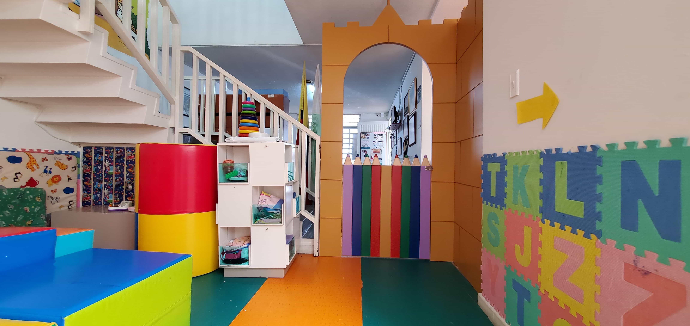
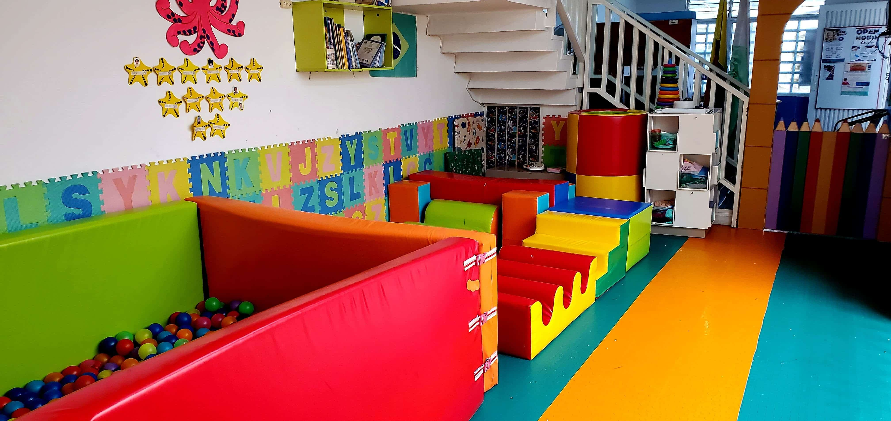
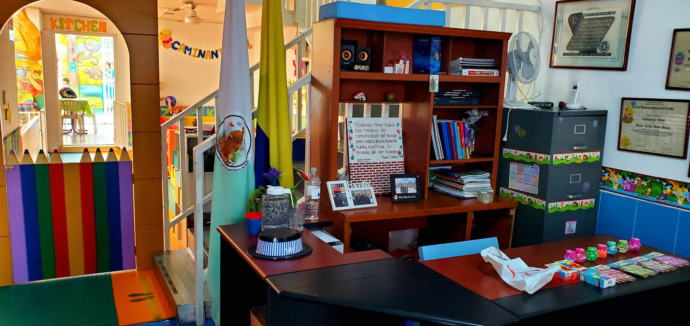
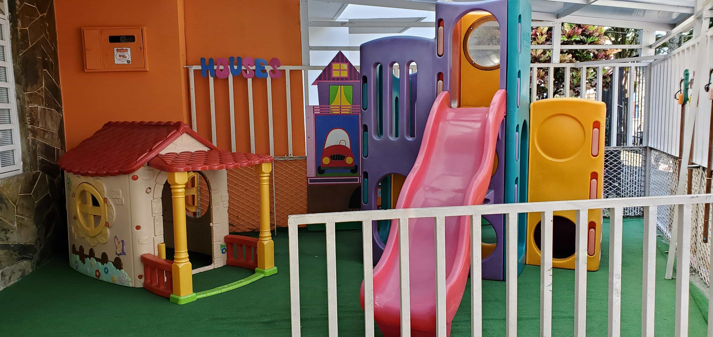

Bienvenidos
Mi pequeño San Francisco de Asís.
♦





Somos una institución educativa con 30 años de experiencia en primera infancia y preescolar, educamos con amor para la vida ,brindando a niños y niñas un ambiente seguro y apropiado para que puedan desarrollar todo su potencial, una educación integral con metodologías innovadoras favoreciendo y potenciando el desarrollo de sus capacidades cognitivas, psico-sociales, afectivas, lingüísticas, artísticas, espirituales y físicas acordes a su edad, a través de una enseñanza con énfasis en inglés, música, danza y natación.

Reconocer en cada Niño un ser único e irremplazable, proporcionando crecimiento sano de gran calidad tanto en las areas académicas, deportivas, artísticas y socio afectivas en un entorno de amor y justicia.

Ser la primera opción educativa en el nivel pre-escolar que beneficie nuestra comunidad de familia niños y niñas.

Los beneficios de estimular la creatividad en las actvidades de los niños y niñas son muy valiosos para su desarrollo físico, mental y emocional. También permite estimular desarrollar sus habilidades, capacidades intelectuales y sociales.